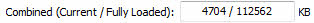
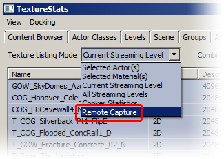

UDN
Search public documentation:
TextureStatsBrowserReferenceCH
English Translation
日本語訳
한국어
Interested in the Unreal Engine?
Visit the Unreal Technology site.
Looking for jobs and company info?
Check out the Epic games site.
Questions about support via UDN?
Contact the UDN Staff
日本語訳
한국어
Interested in the Unreal Engine?
Visit the Unreal Technology site.
Looking for jobs and company info?
Check out the Epic games site.
Questions about support via UDN?
Contact the UDN Staff
贴图统计数据浏览器参考指南
概述
打开贴图统计数据浏览器
贴图统计数据浏览器界面

菜单条
文件
- Export(导出) - 导出贴图统计数据到CSV文件中。
视图
- Refresh(刷新) - 刷新贴图统计数据。
Docking(停靠状态)
- Docked(停靠) - 这个选项将会把当前浮动的浏览器停靠到主浏览器窗口中。在当前的浏览器处于停靠状态时，这个选项将处于选种状态。
- Floating(浮动) - 这个选项将会取消停靠浏览器到主要浏览器窗口的停靠状态，使它在自己的窗口中变为浮动的浏览器。在当前的浏览器处于浮动状态时，这个选项处于选中状态。
- Clone Browser(克隆浏览器) - 这个选项将会创建一个当前浏览器的副本。
- Floating Browser（浮动浏览器） - 这个选项将会移除或删除当前的浏览器。这个选项进行在有克隆的浏览器窗口存在时才启用。
工具条
 | 改变统计数据列表的 列表模式。 |
|  | 显示当前完全加载的贴图的内存使用情况。 |
 | 隐藏在统计数据局列表中当前选中的项。 |
| 显示统计数据列表中所有隐藏的贴图。 |
如何使用"远程捕获"功能
当启动了编辑器后，便可以选择远程连接目标。 现在，在贴图统计数据中我们可以使用"Remote Capture(远程捕获)"模式了：
贴图列表模式
统计数据列表
- 鼠标双击列表中的某行将会跳转到内容浏览器中的那个贴图处(如果可以在可用的包中找到那个贴图路径)。
- 右击一行将打开统计数据列表的 关联菜单。
- 点击列表栏的标签那么列表中的数据将会按照那个标准进行排序，再次点击该标签将按照相反的顺序排序。 两个排序标准可以使得浏览数据更加方便。
- 左击(按下shift及control键来获得更多的操作)可以选择资源。
- 可以通过 关联菜单或通过"Hide Selection(隐藏选中的资源)"按钮来隐藏选中的资源。
- 直到退出编辑器或者通过点击"Unhide All(显示所有资源)"项来显示所有隐藏的资源之前，将会维护一个隐藏的资源的列表。
关联菜单
- Find Actors using this texture（查找使用这贴图的actors） - 选择任何使用了选中的贴图的actors，并把相机对准它们。
- Find Materials using this texture in the Content Browser(在内容浏览器中查找使用了这个贴图的材质) - 打开内容浏览器并选中使用了选中贴图的任何材质。
- Invert Selection(反向选择) - 取消选中的项并在统计数据列表中选择那些先前没有选中的所有贴图。
- Hide Selection(隐藏选中的贴图) - 在任务列表中隐藏当前选中的贴图。
- Unhide All(显示所有资源) - 取消隐藏统计数据列表中当前隐藏的所有贴图。